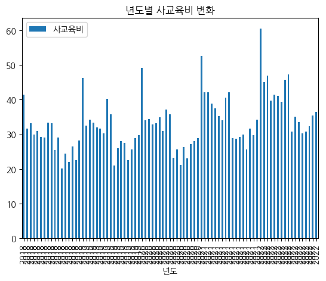
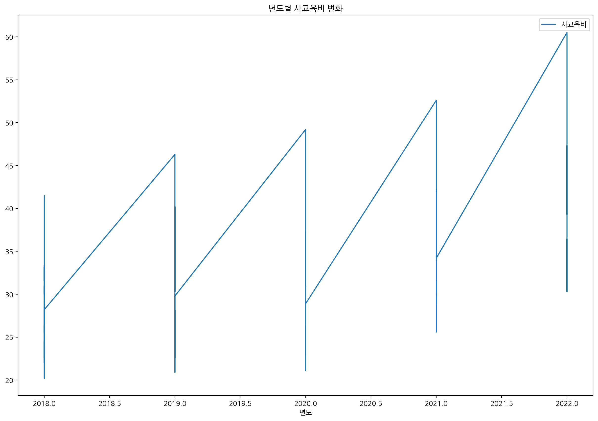
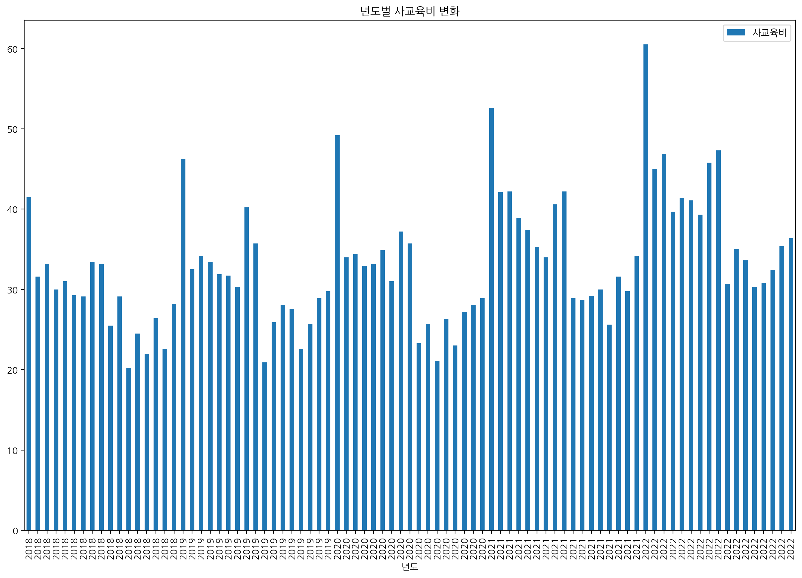
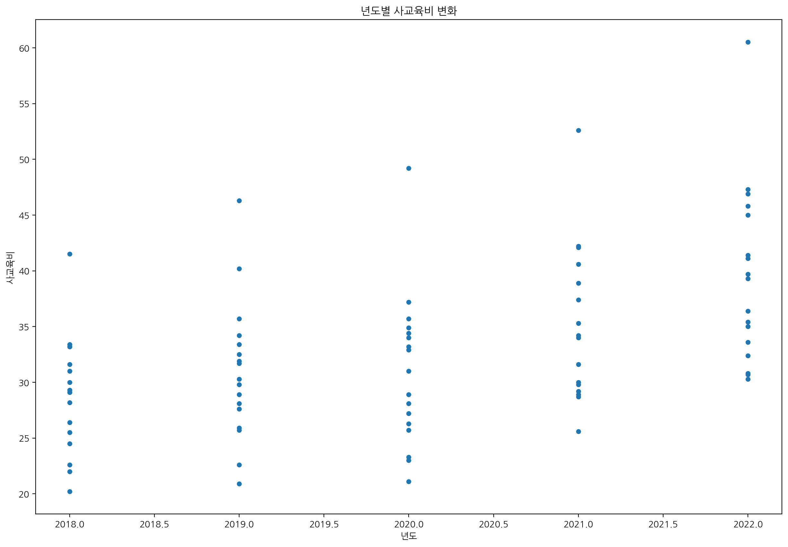
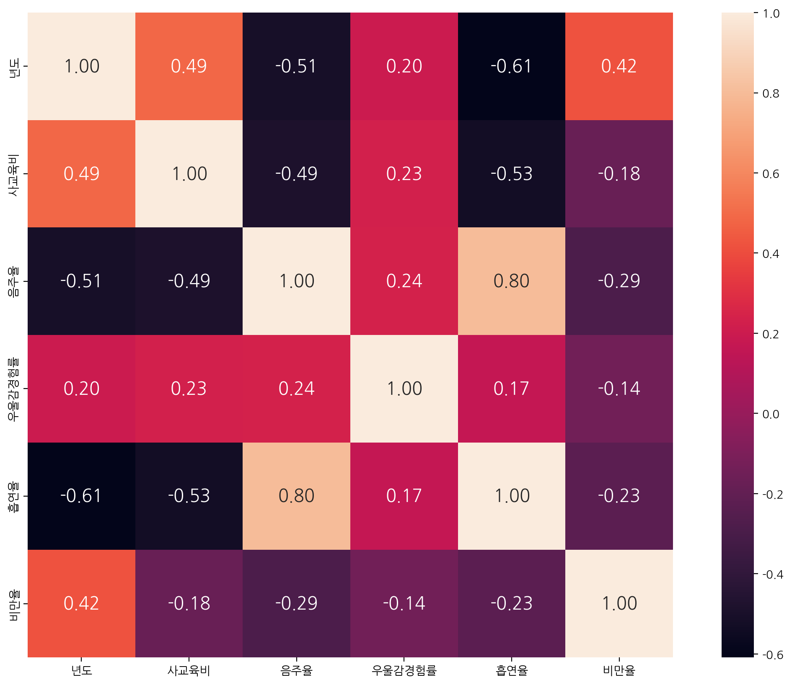

import pandas as pd
import scipy.stats as stats
import matplotlib.pyplot as plt
import koreanize_matplotlib10 사교육비 증가에 따른 상관관계 파악
10.1 데이터 불러오기 및 전처리
10.1.1 18년부터 22년까지 총 5년간의 시도별 데이터를 불러와서 전처리 후 병합
10.1.2 Try1. 데이터 관찰 및 처리 방법 결정
local = "서울 부산 대구 인천 광주 대전 울산 세종 경기 강원 충북 충남 전북 전남 경북 경남 제주"
target = local.split(" ")
df2 = pd.DataFrame()
for j in target:
df = pd.read_excel(f"data/local/{j}_2018.xlsx")
df1 = pd.DataFrame(df.loc[8])
df1.drop(["Unnamed: 1","Unnamed: 4"], axis=0, inplace=True)
df1.rename(index={"Middle School": "Unnamed: 11"}, inplace=True)
df1.reset_index(inplace = True)
df1.drop(["index"], axis=1, inplace=True)
for i in df1.index:
if i % 2 == 1:
df1.loc[i]
else:
df1.drop([i],axis=0,inplace=True)
df1.index = ["졸업자", "진학자", "일반고", "특성화고", "특목고", "자율고", "기타", "취업자", "무직자및미상"]
df1 = df1.T
df2 = pd.concat([df2, df1])
df2.index = target
df2["year"] = 2018
df18 = df2.copy()10.1.3 Try2. 함수를 사용해서 일괄적으로 처리
local = "서울 부산 대구 인천 광주 대전 울산 세종 경기 강원 충북 충남 전북 전남 경북 경남 제주".split(" ")def merge_df(year, targets):
df = pd.DataFrame()
df_index = ["졸업자", "진학자", "일반고", "특성화고", "특목고", "자율고", "기타", "취업자", "무직자및미상"]
for year in range(2018, year+1):
for target in targets:
_raw = pd.read_excel(f"data/local/{target}_{year}.xlsx")
_merge_df = pd.DataFrame(_raw.loc[8])
_merge_df.drop(["Unnamed: 1","Unnamed: 4"], axis=0, inplace=True)
_merge_df.rename(index={"Middle School": "Unnamed: 11"}, inplace=True)
_merge_df.reset_index(inplace = True)
_merge_df.drop(["index"], axis=1, inplace=True)
for i in _merge_df.index:
if i % 2 == 1:
_merge_df.loc[i]
else:
_merge_df.drop([i],axis=0,inplace=True)
_merge_df.index = df_index
_merge_df = _merge_df.T
_merge_df["년도"] = year
_merge_df["지역"] = target
df = pd.concat([df, _merge_df])
df = df.reset_index(drop=True)
df = df[["년도", "지역", "졸업자", "진학자", "일반고", "특성화고", "특목고", "자율고", "기타", "취업자", "무직자및미상"]]
return dfdf = merge_df(2022, local)
df| 년도 | 지역 | 졸업자 | 진학자 | 일반고 | 특성화고 | 특목고 | 자율고 | 기타 | 취업자 | 무직자및미상 | |
|---|---|---|---|---|---|---|---|---|---|---|---|
| 0 | 2018 | 서울 | 75301 | 75150 | 48352 | 12663 | 3267 | 10383 | 485 | 2 | 149 |
| 1 | 2018 | 부산 | 26926 | 26835 | 17566 | 5734 | 2101 | 1110 | 324 | 3 | 88 |
| 2 | 2018 | 대구 | 22753 | 22644 | 13993 | 4135 | 1224 | 3176 | 116 | 1 | 108 |
| 3 | 2018 | 인천 | 25956 | 25868 | 17718 | 5704 | 1288 | 711 | 447 | - | 88 |
| 4 | 2018 | 광주 | 16074 | 16039 | 12143 | 2768 | 612 | 403 | 113 | 2 | 33 |
| ... | ... | ... | ... | ... | ... | ... | ... | ... | ... | ... | ... |
| 80 | 2022 | 전북 | 15673 | 15633 | 12571 | 2144 | 770 | 86 | 62 | - | 40 |
| 81 | 2022 | 전남 | 14937 | 14898 | 10479 | 3316 | 689 | 357 | 57 | - | 39 |
| 82 | 2022 | 경북 | 20140 | 20094 | 14612 | 3141 | 1113 | 1174 | 54 | - | 46 |
| 83 | 2022 | 경남 | 29440 | 29369 | 23356 | 3600 | 1173 | 891 | 349 | - | 71 |
| 84 | 2022 | 제주 | 6392 | 6357 | 5000 | 1107 | 193 | 10 | 47 | - | 35 |
85 rows × 11 columns
10.1.4 시도별 중학생 1인당 월평균 사교육비 컬럼 추가
money = pd.read_csv("data/money.csv",encoding = "cp949")
money = money.drop([0,1], axis = 0)
money = money.iloc[:,6:]
money.index = local
money = money.iloc[:,4:].reset_index(drop=False)
money = money.rename(columns = {"index":"지역"})money = pd.concat([money[["지역","2018"]].rename(columns = {"2018":"사교육비"}),
money[["지역","2019"]].rename(columns = {"2019":"사교육비"}),
money[["지역","2020"]].rename(columns = {"2020":"사교육비"}),
money[["지역","2021"]].rename(columns = {"2021":"사교육비"}),
money[["지역","2022"]].rename(columns = {"2022":"사교육비"})]).reset_index(drop=True)
moneymoney = money.melt(id_vars = "지역", var_name = "년도", value_name = "사교육비")
money = money.drop("년도", axis=1)
money["사교육비"] = money["사교육비"].astype(float)
money| 지역 | 사교육비 | |
|---|---|---|
| 0 | 서울 | 41.5 |
| 1 | 부산 | 31.6 |
| 2 | 대구 | 33.2 |
| 3 | 인천 | 30.0 |
| 4 | 광주 | 31.0 |
| ... | ... | ... |
| 80 | 전북 | 30.3 |
| 81 | 전남 | 30.8 |
| 82 | 경북 | 32.4 |
| 83 | 경남 | 35.4 |
| 84 | 제주 | 36.4 |
85 rows × 2 columns
df = pd.concat([df,money["사교육비"]],axis=1)
df| 년도 | 지역 | 졸업자 | 진학자 | 일반고 | 특성화고 | 특목고 | 자율고 | 기타 | 취업자 | 무직자및미상 | 사교육비 | |
|---|---|---|---|---|---|---|---|---|---|---|---|---|
| 0 | 2018 | 서울 | 75301 | 75150 | 48352 | 12663 | 3267 | 10383 | 485 | 2 | 149 | 41.5 |
| 1 | 2018 | 부산 | 26926 | 26835 | 17566 | 5734 | 2101 | 1110 | 324 | 3 | 88 | 31.6 |
| 2 | 2018 | 대구 | 22753 | 22644 | 13993 | 4135 | 1224 | 3176 | 116 | 1 | 108 | 33.2 |
| 3 | 2018 | 인천 | 25956 | 25868 | 17718 | 5704 | 1288 | 711 | 447 | - | 88 | 30.0 |
| 4 | 2018 | 광주 | 16074 | 16039 | 12143 | 2768 | 612 | 403 | 113 | 2 | 33 | 31.0 |
| ... | ... | ... | ... | ... | ... | ... | ... | ... | ... | ... | ... | ... |
| 80 | 2022 | 전북 | 15673 | 15633 | 12571 | 2144 | 770 | 86 | 62 | - | 40 | 30.3 |
| 81 | 2022 | 전남 | 14937 | 14898 | 10479 | 3316 | 689 | 357 | 57 | - | 39 | 30.8 |
| 82 | 2022 | 경북 | 20140 | 20094 | 14612 | 3141 | 1113 | 1174 | 54 | - | 46 | 32.4 |
| 83 | 2022 | 경남 | 29440 | 29369 | 23356 | 3600 | 1173 | 891 | 349 | - | 71 | 35.4 |
| 84 | 2022 | 제주 | 6392 | 6357 | 5000 | 1107 | 193 | 10 | 47 | - | 35 | 36.4 |
85 rows × 12 columns
10.1.5 시도별 중학생 음주율 컬럼 추가
drink = pd.concat([drink[["응답자특성별(2)","2018"]].rename(columns={"응답자특성별(2)":"지역","2018":"음주율"}),
drink[["응답자특성별(2)","2019"]].rename(columns={"응답자특성별(2)":"지역","2019":"음주율"}),
drink[["응답자특성별(2)","2020"]].rename(columns={"응답자특성별(2)":"지역","2020":"음주율"}),
drink[["응답자특성별(2)","2021"]].rename(columns={"응답자특성별(2)":"지역","2021":"음주율"}),
drink[["응답자특성별(2)","2022"]].rename(columns={"응답자특성별(2)":"지역","2022":"음주율"})]).reset_index(drop=True)
drinkdrink = pd.read_csv("data/drink.csv",encoding="cp949").drop([0,1])
drink = drink.drop("응답자특성별(1)",axis=1)
drink = drink.melt(id_vars = "응답자특성별(2)", var_name = "년도", value_name = "음주율")
drink["음주율"] = drink["음주율"].astype(float)df = pd.concat([df, drink["음주율"]], axis=1)
df| 년도 | 지역 | 졸업자 | 진학자 | 일반고 | 특성화고 | 특목고 | 자율고 | 기타 | 취업자 | 무직자및미상 | 사교육비 | 음주율 | |
|---|---|---|---|---|---|---|---|---|---|---|---|---|---|
| 0 | 2018 | 서울 | 75301 | 75150 | 48352 | 12663 | 3267 | 10383 | 485 | 2 | 149 | 41.5 | 15.4 |
| 1 | 2018 | 부산 | 26926 | 26835 | 17566 | 5734 | 2101 | 1110 | 324 | 3 | 88 | 31.6 | 15.9 |
| 2 | 2018 | 대구 | 22753 | 22644 | 13993 | 4135 | 1224 | 3176 | 116 | 1 | 108 | 33.2 | 14.3 |
| 3 | 2018 | 인천 | 25956 | 25868 | 17718 | 5704 | 1288 | 711 | 447 | - | 88 | 30.0 | 15.4 |
| 4 | 2018 | 광주 | 16074 | 16039 | 12143 | 2768 | 612 | 403 | 113 | 2 | 33 | 31.0 | 17.8 |
| ... | ... | ... | ... | ... | ... | ... | ... | ... | ... | ... | ... | ... | ... |
| 80 | 2022 | 전북 | 15673 | 15633 | 12571 | 2144 | 770 | 86 | 62 | - | 40 | 30.3 | 14.9 |
| 81 | 2022 | 전남 | 14937 | 14898 | 10479 | 3316 | 689 | 357 | 57 | - | 39 | 30.8 | 13.5 |
| 82 | 2022 | 경북 | 20140 | 20094 | 14612 | 3141 | 1113 | 1174 | 54 | - | 46 | 32.4 | 16.5 |
| 83 | 2022 | 경남 | 29440 | 29369 | 23356 | 3600 | 1173 | 891 | 349 | - | 71 | 35.4 | 14.4 |
| 84 | 2022 | 제주 | 6392 | 6357 | 5000 | 1107 | 193 | 10 | 47 | - | 35 | 36.4 | 9.9 |
85 rows × 13 columns
10.1.6 시도별 중학생 우울감 경험률 컬럼 추가
sad = pd.concat([sad[["응답자특성별(2)","2018"]].rename(columns={"응답자특성별(2)":"지역","2018":"우울감경험률"}),
sad[["응답자특성별(2)","2019"]].rename(columns={"응답자특성별(2)":"지역","2019":"우울감경험률"}),
sad[["응답자특성별(2)","2020"]].rename(columns={"응답자특성별(2)":"지역","2020":"우울감경험률"}),
sad[["응답자특성별(2)","2021"]].rename(columns={"응답자특성별(2)":"지역","2021":"우울감경험률"}),
sad[["응답자특성별(2)","2022"]].rename(columns={"응답자특성별(2)":"지역","2022":"우울감경험률"})]).reset_index(drop=True)sad = pd.read_csv("data/sad.csv",encoding="cp949").drop([0,1])
sad = sad.drop("응답자특성별(1)",axis=1)
sad = sad.melt(id_vars = "응답자특성별(2)", var_name = "년도", value_name = "우울감경험률")
sad["우울감경험률"] = sad["우울감경험률"].astype(float)
sad| 응답자특성별(2) | 년도 | 우울감경험률 | |
|---|---|---|---|
| 0 | 서울 | 2018 | 29.6 |
| 1 | 부산 | 2018 | 24.2 |
| 2 | 대구 | 2018 | 23.1 |
| 3 | 인천 | 2018 | 25.4 |
| 4 | 광주 | 2018 | 28.3 |
| ... | ... | ... | ... |
| 80 | 전북 | 2022 | 29.5 |
| 81 | 전남 | 2022 | 26.2 |
| 82 | 경북 | 2022 | 26.7 |
| 83 | 경남 | 2022 | 27.9 |
| 84 | 제주 | 2022 | 25.8 |
85 rows × 3 columns
df = pd.concat([df, sad["우울감경험률"]], axis=1)
df| 년도 | 지역 | 졸업자 | 진학자 | 일반고 | 특성화고 | 특목고 | 자율고 | 기타 | 취업자 | 무직자및미상 | 사교육비 | 음주율 | 우울감경험률 | |
|---|---|---|---|---|---|---|---|---|---|---|---|---|---|---|
| 0 | 2018 | 서울 | 75301 | 75150 | 48352 | 12663 | 3267 | 10383 | 485 | 2 | 149 | 41.5 | 15.4 | 29.6 |
| 1 | 2018 | 부산 | 26926 | 26835 | 17566 | 5734 | 2101 | 1110 | 324 | 3 | 88 | 31.6 | 15.9 | 24.2 |
| 2 | 2018 | 대구 | 22753 | 22644 | 13993 | 4135 | 1224 | 3176 | 116 | 1 | 108 | 33.2 | 14.3 | 23.1 |
| 3 | 2018 | 인천 | 25956 | 25868 | 17718 | 5704 | 1288 | 711 | 447 | - | 88 | 30.0 | 15.4 | 25.4 |
| 4 | 2018 | 광주 | 16074 | 16039 | 12143 | 2768 | 612 | 403 | 113 | 2 | 33 | 31.0 | 17.8 | 28.3 |
| ... | ... | ... | ... | ... | ... | ... | ... | ... | ... | ... | ... | ... | ... | ... |
| 80 | 2022 | 전북 | 15673 | 15633 | 12571 | 2144 | 770 | 86 | 62 | - | 40 | 30.3 | 14.9 | 29.5 |
| 81 | 2022 | 전남 | 14937 | 14898 | 10479 | 3316 | 689 | 357 | 57 | - | 39 | 30.8 | 13.5 | 26.2 |
| 82 | 2022 | 경북 | 20140 | 20094 | 14612 | 3141 | 1113 | 1174 | 54 | - | 46 | 32.4 | 16.5 | 26.7 |
| 83 | 2022 | 경남 | 29440 | 29369 | 23356 | 3600 | 1173 | 891 | 349 | - | 71 | 35.4 | 14.4 | 27.9 |
| 84 | 2022 | 제주 | 6392 | 6357 | 5000 | 1107 | 193 | 10 | 47 | - | 35 | 36.4 | 9.9 | 25.8 |
85 rows × 14 columns
10.1.7 시도별 중학생 흡연율 컬럼 추가
smoke = pd.concat([smoke[["응답자특성별(2)","2018"]].rename(columns={"응답자특성별(2)":"지역","2018":"흡연율"}),
smoke[["응답자특성별(2)","2019"]].rename(columns={"응답자특성별(2)":"지역","2019":"흡연율"}),
smoke[["응답자특성별(2)","2020"]].rename(columns={"응답자특성별(2)":"지역","2020":"흡연율"}),
smoke[["응답자특성별(2)","2021"]].rename(columns={"응답자특성별(2)":"지역","2021":"흡연율"}),
smoke[["응답자특성별(2)","2022"]].rename(columns={"응답자특성별(2)":"지역","2022":"흡연율"})]).reset_index(drop=True)smoke = pd.read_csv("data/smoke.csv",encoding="cp949").drop([0,1])
smoke = smoke.drop("응답자특성별(1)",axis=1)
smoke = smoke.melt(id_vars = "응답자특성별(2)", var_name = "년도", value_name = "흡연율")
smoke["흡연율"] = smoke["흡연율"].astype(float)
smoke| 응답자특성별(2) | 년도 | 흡연율 | |
|---|---|---|---|
| 0 | 서울 | 2018 | 5.7 |
| 1 | 부산 | 2018 | 5.8 |
| 2 | 대구 | 2018 | 6.8 |
| 3 | 인천 | 2018 | 6.8 |
| 4 | 광주 | 2018 | 8.4 |
| ... | ... | ... | ... |
| 80 | 전북 | 2022 | 6.3 |
| 81 | 전남 | 2022 | 6.3 |
| 82 | 경북 | 2022 | 5.4 |
| 83 | 경남 | 2022 | 4.8 |
| 84 | 제주 | 2022 | 4.1 |
85 rows × 3 columns
df = pd.concat([df,smoke["흡연율"]], axis=1)
df| 년도 | 지역 | 졸업자 | 진학자 | 일반고 | 특성화고 | 특목고 | 자율고 | 기타 | 취업자 | 무직자및미상 | 사교육비 | 음주율 | 우울감경험률 | 흡연율 | |
|---|---|---|---|---|---|---|---|---|---|---|---|---|---|---|---|
| 0 | 2018 | 서울 | 75301 | 75150 | 48352 | 12663 | 3267 | 10383 | 485 | 2 | 149 | 41.5 | 15.4 | 29.6 | 5.7 |
| 1 | 2018 | 부산 | 26926 | 26835 | 17566 | 5734 | 2101 | 1110 | 324 | 3 | 88 | 31.6 | 15.9 | 24.2 | 5.8 |
| 2 | 2018 | 대구 | 22753 | 22644 | 13993 | 4135 | 1224 | 3176 | 116 | 1 | 108 | 33.2 | 14.3 | 23.1 | 6.8 |
| 3 | 2018 | 인천 | 25956 | 25868 | 17718 | 5704 | 1288 | 711 | 447 | - | 88 | 30.0 | 15.4 | 25.4 | 6.8 |
| 4 | 2018 | 광주 | 16074 | 16039 | 12143 | 2768 | 612 | 403 | 113 | 2 | 33 | 31.0 | 17.8 | 28.3 | 8.4 |
| ... | ... | ... | ... | ... | ... | ... | ... | ... | ... | ... | ... | ... | ... | ... | ... |
| 80 | 2022 | 전북 | 15673 | 15633 | 12571 | 2144 | 770 | 86 | 62 | - | 40 | 30.3 | 14.9 | 29.5 | 6.3 |
| 81 | 2022 | 전남 | 14937 | 14898 | 10479 | 3316 | 689 | 357 | 57 | - | 39 | 30.8 | 13.5 | 26.2 | 6.3 |
| 82 | 2022 | 경북 | 20140 | 20094 | 14612 | 3141 | 1113 | 1174 | 54 | - | 46 | 32.4 | 16.5 | 26.7 | 5.4 |
| 83 | 2022 | 경남 | 29440 | 29369 | 23356 | 3600 | 1173 | 891 | 349 | - | 71 | 35.4 | 14.4 | 27.9 | 4.8 |
| 84 | 2022 | 제주 | 6392 | 6357 | 5000 | 1107 | 193 | 10 | 47 | - | 35 | 36.4 | 9.9 | 25.8 | 4.1 |
85 rows × 15 columns
10.1.8 시도별 중학생 비만율 컬럼 추가
fat = pd.concat([fat[["응답자특성별(2)","2018"]].rename(columns = {"응답자특성별(2)":"지역","2018":"비만율"}),
fat[["응답자특성별(2)","2019"]].rename(columns = {"응답자특성별(2)":"지역","2019":"비만율"}),
fat[["응답자특성별(2)","2020"]].rename(columns = {"응답자특성별(2)":"지역","2020":"비만율"}),
fat[["응답자특성별(2)","2021"]].rename(columns = {"응답자특성별(2)":"지역","2021":"비만율"}),
fat[["응답자특성별(2)","2022"]].rename(columns = {"응답자특성별(2)":"지역","2022":"비만율"})]).reset_index(drop=True)fat = pd.read_csv("data/fat.csv",encoding="cp949").drop([0,1])
fat = fat.drop("응답자특성별(1)",axis=1)
fat = fat.melt(id_vars = "응답자특성별(2)", var_name = "년도", value_name = "비만율")
fat["비만율"] = fat["비만율"].astype(float)
fat| 응답자특성별(2) | 년도 | 비만율 | |
|---|---|---|---|
| 0 | 서울 | 2018 | 10.1 |
| 1 | 부산 | 2018 | 11.9 |
| 2 | 대구 | 2018 | 11.2 |
| 3 | 인천 | 2018 | 11.2 |
| 4 | 광주 | 2018 | 9.8 |
| ... | ... | ... | ... |
| 80 | 전북 | 2022 | 13.2 |
| 81 | 전남 | 2022 | 12.2 |
| 82 | 경북 | 2022 | 14.5 |
| 83 | 경남 | 2022 | 13.3 |
| 84 | 제주 | 2022 | 16.7 |
85 rows × 3 columns
df = pd.concat([df,fat["비만율"]],axis=1)
df| 년도 | 지역 | 졸업자 | 진학자 | 일반고 | 특성화고 | 특목고 | 자율고 | 기타 | 취업자 | 무직자및미상 | 사교육비 | 음주율 | 우울감경험률 | 흡연율 | 비만율 | |
|---|---|---|---|---|---|---|---|---|---|---|---|---|---|---|---|---|
| 0 | 2018 | 서울 | 75301 | 75150 | 48352 | 12663 | 3267 | 10383 | 485 | 2 | 149 | 41.5 | 15.4 | 29.6 | 5.7 | 10.1 |
| 1 | 2018 | 부산 | 26926 | 26835 | 17566 | 5734 | 2101 | 1110 | 324 | 3 | 88 | 31.6 | 15.9 | 24.2 | 5.8 | 11.9 |
| 2 | 2018 | 대구 | 22753 | 22644 | 13993 | 4135 | 1224 | 3176 | 116 | 1 | 108 | 33.2 | 14.3 | 23.1 | 6.8 | 11.2 |
| 3 | 2018 | 인천 | 25956 | 25868 | 17718 | 5704 | 1288 | 711 | 447 | - | 88 | 30.0 | 15.4 | 25.4 | 6.8 | 11.2 |
| 4 | 2018 | 광주 | 16074 | 16039 | 12143 | 2768 | 612 | 403 | 113 | 2 | 33 | 31.0 | 17.8 | 28.3 | 8.4 | 9.8 |
| ... | ... | ... | ... | ... | ... | ... | ... | ... | ... | ... | ... | ... | ... | ... | ... | ... |
| 80 | 2022 | 전북 | 15673 | 15633 | 12571 | 2144 | 770 | 86 | 62 | - | 40 | 30.3 | 14.9 | 29.5 | 6.3 | 13.2 |
| 81 | 2022 | 전남 | 14937 | 14898 | 10479 | 3316 | 689 | 357 | 57 | - | 39 | 30.8 | 13.5 | 26.2 | 6.3 | 12.2 |
| 82 | 2022 | 경북 | 20140 | 20094 | 14612 | 3141 | 1113 | 1174 | 54 | - | 46 | 32.4 | 16.5 | 26.7 | 5.4 | 14.5 |
| 83 | 2022 | 경남 | 29440 | 29369 | 23356 | 3600 | 1173 | 891 | 349 | - | 71 | 35.4 | 14.4 | 27.9 | 4.8 | 13.3 |
| 84 | 2022 | 제주 | 6392 | 6357 | 5000 | 1107 | 193 | 10 | 47 | - | 35 | 36.4 | 9.9 | 25.8 | 4.1 | 16.7 |
85 rows × 16 columns
df| 년도 | 지역 | 졸업자 | 진학자 | 일반고 | 특성화고 | 특목고 | 자율고 | 기타 | 취업자 | 무직자및미상 | 사교육비 | 음주율 | 우울감경험률 | 흡연율 | 비만율 | |
|---|---|---|---|---|---|---|---|---|---|---|---|---|---|---|---|---|
| 0 | 2018 | 서울 | 75301 | 75150 | 48352 | 12663 | 3267 | 10383 | 485 | 2 | 149 | 41.5 | 15.4 | 29.6 | 5.7 | 10.1 |
| 1 | 2018 | 부산 | 26926 | 26835 | 17566 | 5734 | 2101 | 1110 | 324 | 3 | 88 | 31.6 | 15.9 | 24.2 | 5.8 | 11.9 |
| 2 | 2018 | 대구 | 22753 | 22644 | 13993 | 4135 | 1224 | 3176 | 116 | 1 | 108 | 33.2 | 14.3 | 23.1 | 6.8 | 11.2 |
| 3 | 2018 | 인천 | 25956 | 25868 | 17718 | 5704 | 1288 | 711 | 447 | - | 88 | 30.0 | 15.4 | 25.4 | 6.8 | 11.2 |
| 4 | 2018 | 광주 | 16074 | 16039 | 12143 | 2768 | 612 | 403 | 113 | 2 | 33 | 31.0 | 17.8 | 28.3 | 8.4 | 9.8 |
| ... | ... | ... | ... | ... | ... | ... | ... | ... | ... | ... | ... | ... | ... | ... | ... | ... |
| 80 | 2022 | 전북 | 15673 | 15633 | 12571 | 2144 | 770 | 86 | 62 | - | 40 | 30.3 | 14.9 | 29.5 | 6.3 | 13.2 |
| 81 | 2022 | 전남 | 14937 | 14898 | 10479 | 3316 | 689 | 357 | 57 | - | 39 | 30.8 | 13.5 | 26.2 | 6.3 | 12.2 |
| 82 | 2022 | 경북 | 20140 | 20094 | 14612 | 3141 | 1113 | 1174 | 54 | - | 46 | 32.4 | 16.5 | 26.7 | 5.4 | 14.5 |
| 83 | 2022 | 경남 | 29440 | 29369 | 23356 | 3600 | 1173 | 891 | 349 | - | 71 | 35.4 | 14.4 | 27.9 | 4.8 | 13.3 |
| 84 | 2022 | 제주 | 6392 | 6357 | 5000 | 1107 | 193 | 10 | 47 | - | 35 | 36.4 | 9.9 | 25.8 | 4.1 | 16.7 |
85 rows × 16 columns
10.2 그래프를 통한 확인
df.plot.bar(x="년도", y="사교육비", title="년도별 사교육비 변화")
%config InlineBackend.figure_format = "retina"
df.plot(x="년도", y="사교육비", kind="line", title="년도별 사교육비 변화", figsize=(15,10))
df.plot(x="년도", y="사교육비", kind="bar", title="년도별 사교육비 변화", figsize=(15,10))
df.plot(x="년도", y="사교육비", kind="scatter", title="년도별 사교육비 변화", figsize=(15,10))


import seaborn as sns
sns.pairplot(df, hue="지역")_files/figure-html/cell-20-output-1.png)
plt.figure(figsize=(15,10))
sns.heatmap(df.corr(numeric_only=True),
cbar=True,
annot=True,
square=True,
fmt=".2f",
annot_kws={"size": 15})
import plotly.express as px
import plotly.graph_objects as go
from plotly.subplots import make_subplotsdf.columnsIndex(['년도', '지역', '졸업자', '진학자', '일반고', '특성화고', '특목고', '자율고', '기타', '취업자',
'무직자및미상', '사교육비', '음주율', '우울감경험률', '흡연율', '비만율'],
dtype='object')plt.figure(figsize=(15,10))
px.bar(df, x="년도", y="사교육비", color="지역", barmode="group")Unable to display output for mime type(s): application/vnd.plotly.v1+json<Figure size 1500x1000 with 0 Axes>10.3 데이터 형태로 변경
df_data = pd.DataFrame()
columns = ["특성화고진학률","특목고진학률","자율고진학율","특+자 진학률","사교육비","음주율","우울감경험률","흡연율","비만율"]
values = ["특성화고","특목고","자율고"]
i = 0
for i in df.index:
for j in range(0, 9):
k = i*9 + j
df_data.loc[k,"지역"] = df.loc[i,"지역"]
df_data.loc[k,"특성"] = f"{columns[j]}"
df_data.loc[k,"년도"] = str(df.loc[i,"년도"])
if j <= 2:
df_data.loc[k,"값"] = df.loc[i,f"{values[j]}"]/df.loc[i,"졸업자"]
elif j == 3:
df_data.loc[k,"값"] = (df.loc[i,f"{values[j-2]}"] + df.loc[i,f"{values[j-1]}"])/df.loc[i,"졸업자"]
elif j == 4:
df_data.loc[k,"값"] = df.loc[i,"사교육비"]
elif j == 5:
df_data.loc[k,"값"] = df.loc[i,"음주율"]
elif j == 6:
df_data.loc[k,"값"] = df.loc[i,"우울감경험률"]
elif j == 7:
df_data.loc[k,"값"] = df.loc[i,"흡연율"]
elif j == 8:
df_data.loc[k,"값"] = df.loc[i,"비만율"]
i += 1
df_data["년도"] = df_data["년도"].apply(lambda x: int(x))
df_data["값"] = df_data["값"].astype("float")
df_data| 지역 | 특성 | 년도 | 값 | |
|---|---|---|---|---|
| 0 | 서울 | 특성화고진학률 | 2018 | 0.168165 |
| 1 | 서울 | 특목고진학률 | 2018 | 0.043386 |
| 2 | 서울 | 자율고진학율 | 2018 | 0.137887 |
| 3 | 서울 | 특+자 진학률 | 2018 | 0.181272 |
| 4 | 서울 | 사교육비 | 2018 | 41.500000 |
| ... | ... | ... | ... | ... |
| 760 | 제주 | 사교육비 | 2022 | 36.400000 |
| 761 | 제주 | 음주율 | 2022 | 9.900000 |
| 762 | 제주 | 우울감경험률 | 2022 | 25.800000 |
| 763 | 제주 | 흡연율 | 2022 | 4.100000 |
| 764 | 제주 | 비만율 | 2022 | 16.700000 |
765 rows × 4 columns
10.4 상관관계 분석을 하기 위한 정규성 검정
- 가설 : 데이터가 정규성을 만족한다.
for feat in df_data["특성"].unique():
print(f"{feat} : {stats.shapiro(df_data[df_data['특성'] == feat]['값'])[1]}")특성화고진학률 : 0.03166119105713885
특목고진학률 : 0.006314045970690213
자율고진학율 : 7.290498601234899e-09
특+자 진학률 : 1.7305325412308696e-05
사교육비 : 0.0028869564270666372
음주율 : 0.08020648612033501
우울감경험률 : 0.47319430354752207
흡연율 : 0.14145183842071535
비만율 : 0.14380675256536207총 9개 중 5개의 데이터에 있어서 p-value가 유의수준 0.05보다 작기 때문에 귀무가설을 기각하고 대립가설을 채택해서 데이터가 정규성을 만족하지 못한다고 주장할 수 있다.
데이터가 정규성을 만족하지 못하기 때문에 spearman 상관분석으로 상관관계 분석을 진행했다.